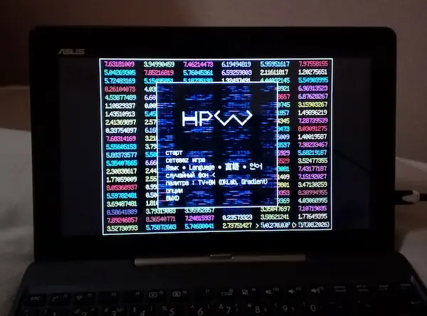

Игра снова доступна на старой Windows7/8.1 x32 - проверено на моём древнем ноутбуко-планшете с Intel Atom и встроенной видяхой.

Подробнее
Решил покодить игру на старом ноуте. Именно на нём 8 лет назад я написал графику для игры. Сейчас эта черепаха собирает мой проект по полчаса, но это всё вина красноглазиков которые не могут в оптимизации и плодят торомоза на пустом месте - раньше сборка летала. Реально, что потянет этот ноут из современного софта, так это sublime/notepad++, GCC8 и TCC. Два года не ообновлял здесь Firefox, обновил и взорвался... Waterfox под x32 не собирают.
Игра кстати хорошо тут зашла, несмотря на встройку и заряд в 7% - можно гамать в 60 фпс благодаря OpenGL3 и адаптивной настройке качества графики. Нельзя стрелять на S + Право, видимо эта отстёгиваемая клава много кнопок за раз не регает. На мелком экране 60 фпс смотрятся живее, но стандартная палитра не подходит - лучше ставить с завышенной гаммой. Специально для этого ноута я выложил отдельную сборку, там палитра сразу выставлена на OkLCH TV.